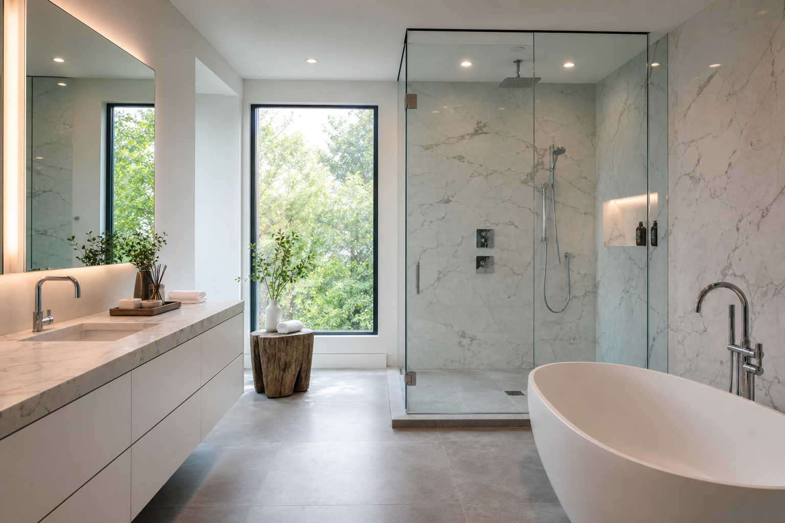

Modern Walk-In Shower + Freestanding Tub Layout Ideas
Pairing a walk in shower with a freestanding tub is a hallmark of upscale bathroom remodeling because it supports both quick routines and slow relaxation. The SEO-friendly headline promise is real—but only if your layout respects plumbing, circulation, privacy, and ventilation. Primary bath remodelers can help you cluster plumbing and preserve clearances before you order the tub.
When this combo works best
This layout shines in primary bathrooms where square footage and wall lengths allow separate zones. In tighter bathrooms, you may still achieve both features, but you will make more compromises on tub size, shower footprint, or storage.
Plumbing clustering: save money and complexity
Whenever possible, keep tub and shower valves on plumbing walls that already serve wet fixtures. Long horizontal runs and complex drain relocations can become budget surprises if decided late—something a bathroom renovation contractor should flag during the first site visit.
Windows, glare, and privacy strategies
Natural light sells a remodel, but plan for privacy and finishes. Sun exposure can affect how often you clean glass and how materials age. Discuss glazing options early.
Ventilation for steam and humidity
Large glass showers and soaking tubs can produce more moisture load. Ventilation should match room volume and real-world usage, not a generic minimum.
Cleaning and maintenance reality check
Freestanding tubs photograph beautifully, but access around the base matters for cleaning. Choose a layout that leaves sensible reach zones for housekeeping.
FAQ
Should the tub go beside the window?
It can work well with privacy planning and thoughtful material choices.
Is a rain showerhead plus handheld worth it?
Many families prefer the combo for flexibility; confirm it fits your enclosure and budget.